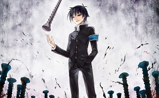

・七夜志貴
『月姫』の派生作品である『歌月十夜』及び
『MELTY BLOOD』に登場する殺人鬼。
主人公の遠野志貴の悪夢からタタリにより具現化した存在。
対魔の暗殺一族である七夜一族の特殊な体術と短刀を用いた暗殺術を用いて戦う。
過去やタタリの影響で古めかしい言葉や地獄や閻魔絡みの言葉をよく口にする。
キャラクター性やその言動からして好きです。
格闘ゲームである『MELTY BLOOD』でもメインで使っています。
・球磨川禊
『めだかボックス』に登場するマイナス十三組のリーダー。
外見こそ普通の学生だが、言動や行為の１つ１つが常軌を逸したものばかりで、
どれが嘘でどれが本心なのか見極めが非常に難しく、
考えている事が全く読めない人物。
また、最悪の過負荷であるが故に、
『どんな勝負にも勝つことができない』という歪んだ性質を持つ。
所持スキルは『大嘘憑き(オールフィクション)』。
あらゆる現象・事象・概念を『なかったこと』にしてしまう能力。
『大嘘憑き』という凶悪な能力を持っていながらも
『絶対に勝てない』という歪んだ要素が大好きです。
また、本人の発言も取り上げるとキリが無い程に逸脱したものばかり。
一挙動一挙動が面白いのにいざという時は『』(カッコ)いいところが魅力的です。